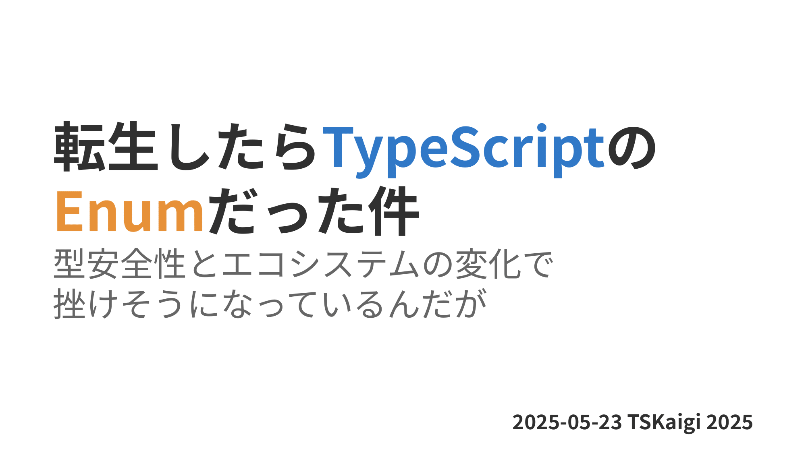
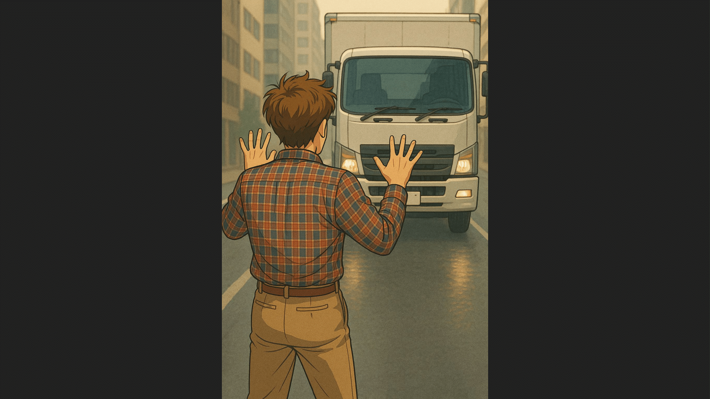
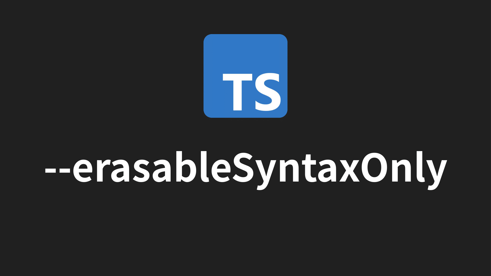
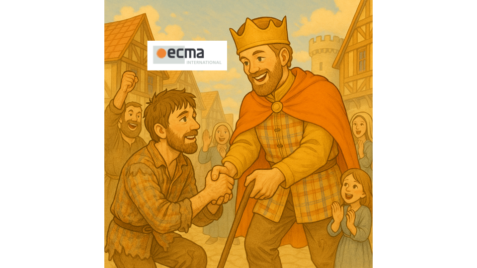
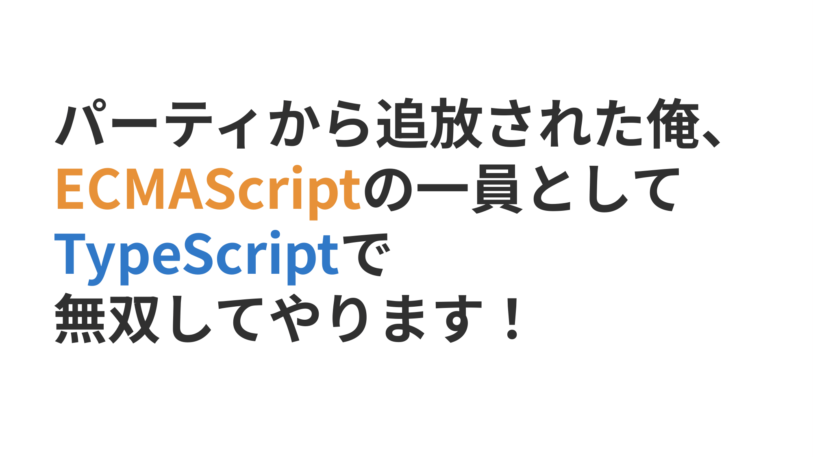

転生したらTypeScriptのEnumだった件
～型安全性とエコシステムの変化で挫けそうになっているんだが～

発表概要
「…ここは、一体？」
気づけば俺は、TypeScriptのEnumとして異世界転生していた。与えられたのは名前付き定数を表現する力「列挙型」。 しかし型安全性を重視する世界において、Union型とconst assertionsたちが我が物顔で闊歩し、俺の居場所を奪っていくのであった。
可読性と保守性を高めるために生まれたはずの俺が、今や時代遅れの遺物扱い。 さらに追い打ちをかけるように、Node.jsの「--experimental-strip-types」とTypeScriptの「--erasableSyntaxOnly」のオプションたちが、存在そのものを消し去ろうとする。
「このままでは…このままでは俺は消えてしまうのか…？」
それでも俺は諦めない。同じように居場所を失いかけている仲間たちと共に、俺は立ち上がる。型安全性、エコシステム、そして自身の存在意義についてを考える旅が今始まろうとしていた…。
この発表ではTypeScriptにおけるEnumが辿ってきた歴史とその苦境についてを解説していきます。聴者がEnumを使うことを改めて見つめ直すような内容を提供いたします。
発表内容

主人公は「列挙 純」という名前の男性です。彼はシステムエンジニアとして働いていて、主にJavaを使っています。
静的型付け言語が大好きで、最近はTypeScriptという言語についても興味が湧いてきました。

そんな彼は、以前から興味をもっていたTSKaigiへ参加するため、チケットを申し込み、会場へ向かっていました。
その道中、突如として暴走したトラックが彼の前に現れ、彼の視界は一気に真っ暗になりました。
次に彼が目を覚ましたのは、見知らぬ暗闇の中。そこからぼんやりと光が差し込んできて、天から声が響きました。
「列挙 純よ、目覚めなさい」
「お前はこれから役割を与えられてこの世界で生きることになる」

「それはTypeScriptのEnumだ」
彼はTypeScriptという国で、列挙型として生きていく運命を背負わされたのです。

Javaで長年Enumを使いこなしてきた彼は、TypeScriptでもその力が存分に発揮されました。
定数をセットとしてまとめて見やすくしたり、定数に値を付与したり、数値の逆マッピングができたりと、様々な能力を発揮しTypeScriptの国民から慕われていました。

しかし彼が活躍していたその裏で、次第に国民たちから不満の声が上がり始めました。
数値上の型安全性問題、バンドルサイズやTree Shakingが効かないこと、そもそも逆マッピングなんかしねぇよと、列挙の役割を疑うようになってきます。

列挙は自らの欠点を改善していきましたが、人々はEnumよりもas constでのオブジェクトリテラルやUnion型の方が優れているのではないかと考えるようになりました。
さらに彼に追い打ちをかけることが起きます。

Node.js国ではTypeScript国との交流を活発にさせるため--experimental-strip-typesという型注釈を除去する新たな法律を制定しました

さらにTypeScript国からは--erasableSyntaxOnlyというEnumを含むTypeScript特有のコントラクトを警告する法律を制定しました。
これらの法律が制定され、EnumといったTypeScriptでの固有の役割をもつ者たちの立場はどんどんなくなっていきました。
列挙はTypeScript国から居場所を失いつつあり、深い絶望の中にいました。
「俺は、この世界に転生してきたのに、いったいどう役立てばいいんだろう…？」
失意の中、彼は国にはいられなくなり、あてもなく彷徨っていました。

そのとき、彼に対して歩み寄ってくる一人の人物が現れました。
その人物は、ECMA International国の王様でした。
王様は言いました。「列挙よ、君の力が必要だ。我々の国に来て、新たな役割を果たしてほしい」と。

そうしてECMA International国ではEnumを正式にJavaScriptの一部として取り込もうとする「Proposal for ECMAScript enums」プロジェクトが動き出したのです。

またTypeScript国でも、Enumの型注釈を作り列挙型を生かしつつ型情報だけを削除できるようにしたい声もあげられています。
そう、Enumの価値を理解し、必要としている人たちはそこに居たのです。

居場所がなくなったと思われたEnumの役割が見直され、as constやUnion型らと一緒に肩を並べて笑える日がまた来るかもしれません。

この物語は当初はなろう系のストーリーでした。
しかし、この話はいつの間にか追放無双系の物語へと変わりました。

なのでタイトルは『パーティーから追放された俺、ECMAScriptの一員として、TypeScriptで無双してやります！』にしたほうがふさわしいかもしれません。
ーーーすみません、ここで緊急ニュースです。
なんとこの続きを執筆する予定だった作者が、Microsoftからレイオフされてしまったとのことです。
タイトルが今の形だとちょっと使えない雰囲気になってしまいましたね。

タイトルは改めまして、
『パーティーから追放された俺、ECMAScriptの一員としてTypeScriptで無双できるかな…？』
に変更されました。
列挙 純の今後に、皆様ご期待ください。
参考資料
- TypeScript: Handbook - Enums
- 列挙型 (enum) | TypeScript入門『サバイバルTypeScript』
- さようなら、TypeScript enum - 株式会社カブク
- TypeScriptのenumを使わないほうがいい理由を、Tree-shakingの観点で紹介します
- tc39/proposal-enum: Proposal for ECMAScript enums
- Why does TypeScript PM advice not to use const enum? If so, why not take out from language SPEC · Issue #30590 · microsoft/TypeScript
- Implement erasable Enum Annotations by caitp · Pull Request #61414 · microsoft/TypeScript
- https://x.com/rbuckton/status/1922364558426911039